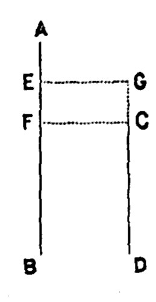

Chapter 15: Of Profits¶
15.1 § 1. Profits include Interest and Risk; but, correctly speaking, do not include Wages of Superintendence¶
Having treated of the laborer's share of the produce, we next proceed to the share of the capitalist; the profits of capital or stock; the gains of the person who advances the expenses of production—who, from funds in his possession, pays the wages of the laborers, or supports them during the work; who supplies the requisite buildings, materials, and tools or machinery; and to whom, by the usual terms of the contract, the produce belongs, to be disposed of at his pleasure. After indemnifying him for his outlay, there commonly remains a surplus, which is his profit; the net income from his capital [and skill]; the amount which he can afford to expend in necessaries or pleasures, or from which by further saving he can add to his wealth.
As the wages of the laborer are the remuneration of labor, so [a part of] the profits of the capitalist are properly, according to Mr. Senior's well-chosen expression, the remuneration of abstinence. They are what he gains by forbearing to consume his capital for his own uses, and allowing it to be consumed by productive laborers for their uses. For this forbearance he requires a recompense.
Of the gains, however, which the possession of a capital enables a person to make, (1) a part only is properly an equivalent for the use of the capital itself; namely, as much as a solvent person would be willing to pay for the loan of it. This, which as everybody knows is called interest, is all that a person is enabled to get by merely abstaining from the immediate consumption of his capital, and allowing it to be used for productive purposes by others. The remuneration which is obtained in any country for mere abstinence is measured by the current rate of interest on the best security; such security as precludes any appreciable chance of losing the principal. What a person expects to gain, who superintends the employment of his own capital, is always more, and generally much more, than this. The rate of profit greatly exceeds the rate of interest. (2.) The surplus is partly compensation for risk. By lending his capital on unexceptionable security he runs little or no risk. But if he embarks in business on his own account, he always exposes his capital to some, and in many cases to very great, danger of partial or total loss. For this danger he must be compensated, otherwise he will not incur it. (3.) He must likewise be remunerated for the devotion of his time and labor. The control of the operations of industry usually belongs to the person who supplies the whole or the greatest part of the funds by which they are carried on, and who, according to the ordinary arrangement, is either alone interested, or is the person most interested (at least directly), in the result. To exercise this control with efficiency, if the concern is large and complicated, requires great assiduity, and often no ordinary skill. This assiduity and skill must be remunerated.
The gross profits from capital, the gains returned to those who supply the funds for production, must suffice for these three purposes; and the three parts into which profit may be considered as resolving itself may be described respectively as interest, insurance, and wages of superintendence.
Inasmuch as risk is the cause affecting the rate of interest, it would be much simpler to consider the whole reward for abstinence as interest, the rate of which is affected by the risk; and to carefully exclude from the profits of capital the payment for “assiduity and skill,” which is distinctly wages of labor. The “wages of superintendence,” as every one on a moment's reflection must admit, have no necessary connection whatever with the possession of capital. The thing with which the laborer is occupied does not give the reason for associating his wages with the name of that thing; because a highly-qualified manager supervises the operations of capital, it does not follow that he has capital, or should be regarded as being paid for the possession of capital. The man who shovels ashes is not paid wages of ashes, any more than a man who superintends other people's capital is paid the reward of capital. The payment for services, in the one case as in the other, depends upon the skill of the manager, just as it does with an ordinary mechanic, rising or falling with his fitness for the peculiar work. Skill as a manager is the cause; the amount of the remuneration is the consequence. If so, then the wages of superintendence have no logical connection, in the economic sense, with capital as the thing which determines the amount of its reward, any more than it affects the wages of any and all labor. The payment for the use of capital, simply as capital, may be seen by the amount which a widow who is not engaged in active business receives from her property invested as trust funds. Moreover, it is less and less true that the manager of the operations of industry is necessarily the capitalist. To see this, mark the executive managers (called “treasurers” by custom) of cotton and woolen mills, who receive a remuneration entirely distinct from any capital they may have invested in the shares of the corporation; and the officials of the great mutual insurance companies, who receive the wages of managers, but for managing the capital of others. A large—by far the largest—part of what is usually called profit, therefore, should be treated as wages, and the forces which govern its amount are the same as those affecting the amounts of all other kinds of wages, such as are discussed in the preceding chapter. The acknowledgment of this distinction is of extreme importance, and affects, in a profound way, the whole question of distribution. To include “wages of superintendence” in profits of capital is to unnecessarily complicate one of the most serious economic questions—namely, the relations of capital and labor.
15.2 § 2. The Minimum of Profits; what produces Variations in the Amount of Profits¶
The lowest rate of profit that can permanently exist is that which is barely adequate, at the given place and time, to afford an equivalent for the abstinence, risk, and exertion implied in the employment of capital. From the gross profit has first to be deducted as much as will form a fund sufficient on the average to cover all losses incident to the employment. Next, it must afford such an equivalent to the owner of the capital for forbearing to consume it as is then and there a sufficient motive to him to persist in his abstinence. How much will be required to form this equivalent depends on the comparative value placed, in the given society, upon the present and the future (in the words formerly used): on the strength of the effective desire of accumulation. Further, after covering all losses, and remunerating the owner for forbearing to consume, there must be something left to recompense the labor and skill of the person who devotes his time to the business.
Such, then, is the minimum of profits: but that minimum is exceedingly variable, and at some times and places extremely low, on account of the great variableness of two out of its three elements. That the rate of necessary remuneration for abstinence, or in other words the effective desire of accumulation, differs widely in different states of society and civilization, has been seen in a former chapter. There is a still wider difference in the element which consists in compensation for risk.
The remuneration of capital in different employments, much more than the remuneration of labor, varies according to the circumstances which render one employment more attractive or more repulsive than another. The profits, for example, of retail trade, in proportion to the capital employed, exceed those of wholesale dealers or manufacturers, for this reason among others, that there is less consideration attached to the employment. The greatest, however, of these differences, is that caused by difference of risk. The profits of a gunpowder-manufacturer must be considerably greater than the average, to make up for the peculiar risks to which he and his property are constantly exposed. When, however, as in the case of marine adventure, the peculiar risks are capable of being, and commonly are, commuted for a fixed payment, the premium of insurance takes its regular place among the charges of production, and the compensation which the owner of the ship or cargo receives for that payment does not appear in the estimate of his profits, but is included in the replacement of his capital.
The minimum of profits can not properly include wages of superintendence, nor is it so included, practically, in Mr. Mill's discussions on the minimum of profits in a later part of this volume. The operation of the various elements in changing the amount of profits might be expressed as follows: As between different countries and communities, who have a different effective desire of accumulation, profits may vary with the element of interest and risk; within the same district, where interest is generally the same on the same security, profits may vary with the risk attached to different industries; and, within the same occupations, interest and risk being given, the wages of superintendence may make a greater variation than either of the other two causes—since a skillful manager may make a large return, a poor one none at all. Or between two employments, interest and risk remaining the same, wages of superintendence sometimes produce a wide difference.
The portion, too, of the gross profit, which forms the remuneration for the labor and skill of the dealer or producer, is very different in different employments. This is the explanation always given of the extraordinary rate of apothecaries' profit. There are cases, again, in which a considerable amount of labor and skill is required to conduct a business necessarily of limited extent. In such cases a higher than common rate of profit is necessary to yield only the common rate of remuneration.
All the natural monopolies (meaning thereby those which are created by circumstances, and not by law) which produce or aggravate the disparities in the remuneration of different kinds of labor, operate similarly between different employments of capital.
In this passage Mr. Mill points out distinctly that the movement up and down in the wages of a manager are governed by the same laws as those which regulate differences in the different rewards of labor, but yet he connects it improperly with capital. It will be seen that Mr. Mill uses the term “gross profit” on the next page in order to avoid the difficulty, which rises unconsciously in his mind, of the anomalous presence of the wages of the manager in the question of profit.
15.3 § 3. General Tendency of Profits to an Equality¶
After due allowance is made for these various causes of inequality, namely, difference in the risk or agreeableness of different employments, and natural or artificial monopolies [which give greater or less wages of superintendence], the rate of profit on capital in all employments tends to an equality. That portion of profit which is properly interest, and which forms the real remuneration for abstinence, is strictly the same at the same time and place, whatever be the employment. The rate of interest, on equally good security, does not vary according to the destination of the principal, though it does vary from time to time very much, according to the circumstances of the market.
It is far otherwise with gross profit, which, though (as will presently be seen) it does not vary much from employment to employment, varies very greatly from individual to individual, and can scarcely be in any two cases the same. It depends on the knowledge, talents, economy, and energy of the capitalist himself, or of the agents whom he employs; on the accidents of personal connection; and even on chance. Hardly any two dealers in the same trade, even if their commodities are equally good and equally cheap, carry on their business at the same expense, or turn over their capital in the same time. That equal capitals give equal profits, as a general maxim of trade, would be as false as that equal age or size gives equal bodily strength, or that equal reading or experience gives equal knowledge. The effect depends as much upon twenty other things as upon the single cause specified. On an average (whatever may be the occasional fluctuations) the various employments of capital are on such a footing as to hold out, not equal profits, but equal expectations of profit, to persons of average abilities and advantages. By equal, I mean after making compensation for any inferiority in the agreeableness or safety of an employment. If the case were not so; if there were, evidently, and to common experience, more favorable chances of pecuniary success in one business than in others, more persons would engage their capital in the business. If, on the contrary, a business is not considered thriving; if the chances of profit in it are thought to be inferior to those in other employments; capital gradually leaves it, or at least new capital is not attracted to it; and by this change in the distribution of capital between the less profitable and the more profitable employments, a sort of balance is restored.

This may be easily shown by a diagram in which the capital in one employment is represented by A B, and which exceeds C D, that in another employment, by the amount of A F. It is not necessary that the whole of the excess, A F should be transferred to C D to make the two capitals equal, but only A E, which, added to C D, brings C D to an equality with E B.
This equalizing process, commonly described as the transfer of capital from one employment to another, is not necessarily the onerous, slow, and almost impracticable operation which it is very often represented to be. In the first place, it does not always imply the actual removal of capital already embarked in an employment. In a rapidly progressive state of capital, the adjustment often takes place by means of the new accumulations of each year, which direct themselves in preference toward the more thriving trades. Even when a real transfer of capital is necessary, it is by no means implied that any of those who are engaged in the unprofitable employment relinquish business and break up their establishments. The numerous and multifarious channels of credit through which, in commercial nations, unemployed capital diffuses itself over the field of employment, flowing over in greater abundance to the lower levels, are the means by which the equalization is accomplished. The process consists in a limitation by one class of dealers or producers and an extension by the other of that portion of their business which is carried on with borrowed capital.
“Political economists say that capital sets toward the most profitable trades, and that it rapidly leaves the less profitable and non-paying trades. But in ordinary countries this is a slow process, and some persons, who want to have ocular demonstrations of abstract truths, have been inclined to doubt it because they could not see it. The process would be visible enough if you could only see the books of the bill-brokers and the bankers. If the iron-trade ceases to be as profitable as usual, less iron is sold; the fewer the sales the fewer the bills; and in consequence the number of iron bills [at the banks] is diminished. On the other hand, if, in consequence of a bad harvest, the corn trade becomes on a sudden profitable, immediately ‘corn bills’ are created in large numbers, and, if good, are discounted [at the banks]. Thus capital runs as surely and instantly where it is most wanted, and where there is most to be made of it, as water runs to find its level.”1
In the case of an altogether declining trade, in which it is necessary that the production should be, not occasionally varied, but greatly and permanently diminished, or perhaps stopped altogether, the process of extricating the capital is, no doubt, tardy and difficult, and almost always attended with considerable loss; much of the capital fixed in machinery, buildings, permanent works, etc., being either not applicable to any other purpose, or only applicable after expensive alterations; and time being seldom given for effecting the change in the mode in which it would be effected with least loss, namely, by not replacing the fixed capital as it wears out. There is besides, in totally changing the destination of a capital, so great a sacrifice of established connection, and of acquired skill and experience, that people are always very slow in resolving upon it, and hardly ever do so until long after a change of fortune has become hopeless.
In general, then, although profits are very different to different individuals, and to the same individual in different years, there can not be much diversity at the same time and place in the average profits of different employments (other than the standing differences necessary to compensate for difference of attractiveness), except for short periods, or when some great permanent revulsion has overtaken a particular trade. It is true that, to persons with the same amount of original means, there is more chance of making a large fortune in some employments than in others. But it would be found that in those same employments bankruptcies also are more frequent, and that the chance of greater success is balanced by a greater probability of complete failure.
15.4 § 4. The Cause of the Existence of any Profit; the Advances of Capitalists consist of Wages of Labor¶
The preceding remarks have, I hope, sufficiently elucidated what is meant by the common phrase, “the ordinary rate of profit,” and the sense in which, and the limitations under which, this ordinary rate has a real existence. It now remains to consider what causes determine its amount.
The cause of profit is, that labor produces more than is required for its support; the reason why capital yields a profit is, because food, clothing, materials, and tools last longer than the time which is required to produce them; so that if a capitalist supplies a party of laborers with these things, on condition of receiving all they produce, they will, in addition to reproducing their own necessaries and instruments, have a portion of their time remaining, to work for the capitalist. We thus see that profit arises, not from the incident of exchange, but from the productive power of labor; and the general profit of the country is always what the productive power of labor makes it, whether any exchange takes place or not. I proceed, in expansion of the considerations thus briefly indicated, to exhibit more minutely the mode in which the rate of profit is determined.
I assume, throughout, the state of things which, where the laborers and capitalists are separate classes, prevails, with few exceptions, universally; namely, that the capitalist advances the whole expenses, including the entire remuneration of the laborer. That he should do so is not a matter of inherent necessity; the laborer might wait until the production is complete for all that part of his wages which exceeds mere necessaries, and even for the whole, if he has funds in hand sufficient for his temporary support. But in the latter case the laborer is to that extent really a capitalist, investing capital in the concern, by supplying a portion of the funds necessary for carrying it on; and even in the former case he may be looked upon in the same light, since, contributing his labor at less than the market price, he may be regarded as lending the difference to his employer, and receiving it back with interest (on whatever principle computed) from the proceeds of the enterprise.
The capitalist, then, may be assumed to make all the advances and receive all the produce. His profit consists of the excess of the produce above the advances; his rate of profit is the ratio which that excess bears to the amount advanced.
For example, if A advances 8,000 bushels of corn to laborers in return for 10,000 yards of cloth (and if one bushel of corn sells for the same sum as one yard of cloth), his profit consists of 2,000 yards of cloth. The ratio of the excess, 2,000, to 8,000, the outlay, or 25 per cent, is the rate of profit. It is not the ratio of 2,000 to 10,000.
But what do the advances consist of? It is, for the present, necessary to suppose that the capitalist does not pay any rent; has not to purchase the use of any appropriated natural agent. The nature of rent, however, we have not yet taken into consideration; and it will hereafter appear that no practical error, on the question we are now examining, is produced by disregarding it.
If, then, leaving rent out of the question, we inquire in what it is that the advances of the capitalist, for purposes of production, consist, we shall find that they consist of wages of labor.
A large portion of the expenditure of every capitalist consists in the direct payment of wages. What does not consist of this is composed of materials and implements, including buildings. But materials and implements are produced by labor; and as our supposed capitalist is not meant to represent a single employment, but to be a type of the productive industry of the whole country, we may suppose that he makes his own tools and raises his own materials. He does this by means of previous advances, which, again, consist wholly of wages. If we suppose him to buy the materials and tools instead of producing them, the case is not altered: he then repays to a previous producer the wages which that previous producer has paid. It is true he repays it to him with a profit; and, if he had produced the things himself, he himself must have had that profit on this part of his outlay as well as on every other part. The fact, however, remains, that in the whole process of production, beginning with the materials and tools and ending with the finished product, all the advances have consisted of nothing but wages, except that certain of the capitalists concerned have, for the sake of general convenience, had their share of profit paid to them before the operation was completed.
This idea may be more clear, perhaps, if we imagine a large corporation, not only making woolen cloth, but owning sheep-ranches, where the raw materials are produced; the shops where all machinery is made; and who even produce on their own property all the food, clothing, shelter, and consumption of the laborers employed by them. A line of division may be passed through the returns in all these branches of the industry, separating what is wages from what is profit. Then it can be easily imagined that all the returns on one side, representing profits, go to capitalists, no matter whether they are thousands in number, or only one capitalist typifying the rest, or a single corporation acting for many small capitalists.
15.5 § 5. The Rate of Profit depends on the Cost of Labor¶
It thus appears that the two elements on which, and which alone, the gains of the capitalists depend, are, first, the magnitude of the produce, in other words, the productive power of labor; and secondly, the proportion of that produce obtained by the laborers themselves; the ratio which the remuneration of the laborers bears to the amount they produce.
We thus arrive at the conclusion of Ricardo and others, that the rate of profits depends upon wages; rising as wages fall, and falling as wages rise. In adopting, however, this doctrine, I must insist upon making a most necessary alteration in its wording. Instead of saying that profits depend on wages, let us say (what Ricardo really meant) that they depend on the cost of labor.
This is an entirely different question from that concerning the rate of wages before discussed (Book II, Chap. II). That had to do with the amount of the capital which each laborer, on an average, received as real wages, and this average rate was affected by the number of competitors for labor, as compared with the existing capital, taking into account the nature of the industries in a country. An increase of population, bringing more laborers to compete for employment, will lower the average amount of real wages received by each one; and a decrease of population will bring about the reverse. The rate of wages, however, now that we are considering the matter from the point of view of the capitalist, is but one of the things to be considered affecting cost of labor. The former question was one as to the distribution of capital; the latter is one as to the amount by which the total production is greater than the total capital advanced. Since all capital consists of advances to labor, the present inquiry is one in regard to the quantity of advances compared with the quantity returned; that is, the relation of the total capital to the total production arising from the use of that capital. In the diagram before used (p. 179) the question is not how the contents of circle B are to be distributed, but the relative size of circle B to circle A. In order to produce circle A, it is necessary to advance what is represented by circle B.
Wages and the cost of labor; what labor brings in to the laborer and what it costs to the capitalist are ideas quite distinct, and which it is of the utmost importance to keep so. For this purpose it is essential not to designate them, as is almost always done, by the same name. Wages, in public discussions, both oral and printed, being looked upon from the same point of view of the payers, much oftener than from that of the receivers, nothing is more common than to say that wages are high or low, meaning only that the cost of labor [to the capitalist] is high or low. The reverse of this would be oftener the truth: the cost of labor is frequently at its highest where wages are lowest. This may arise from two causes. (1.) In the first place, the labor, though cheap, may be inefficient.
The facts presented by Mr. Brassey2 very fully illustrate this principle. Although French workmen in their ship-yards receive less wages for the same kind of work than the English workmen in English yards, yet it costs less per ton to build ships in England than in France. The same correspondence between high wages and efficient work was found to be true of railway construction in different parts of the world. With different character, varying amounts of industrial energy, varying intelligence, and endurance, different people do not have the same efficiency of labor. It is ascertained that inefficiency is, as a rule, accompanied by low wages. Even though wages paid for ordinary labor in constructing railways were in India only from nine to twelve cents a day, and in England from seventy-five to eighty-seven cents a day, yet it cost as much to build a mile of railway in India as in England. The English laborer gave a full equivalent for his higher wages. Moreover, while an English weaver tends from two to three times as many looms as his Russian competitor, the workman in the United States, it is said, will tend even more than the Englishman. In American sailing-vessels, also, a less number of sailors, relatively to the tonnage, is required than in English sailing-ships. Mr. Brassey, besides, came to the conclusion that the working power, or efficiency, of ordinary English laborers was to the French as five to three.
(2.) The other cause which renders wages and the cost of labor no real criteria of one another is the varying costliness of the articles which the laborer consumes. If these are cheap, wages, in the sense which is of importance to the laborer, may be high, and yet the cost of labor may be low; if dear, the laborer may be wretchedly off, though his labor may cost much to the capitalist. This last is the condition of a country over-peopled in relation to its land; in which, food being dear, the poorness of the laborer's real reward does not prevent labor from costing much to the purchaser, and low wages and low profits coexist. The opposite case is exemplified in the United States of America. The laborer there enjoys a greater abundance of comforts than in any other country of the world, except some of the newest colonies; but owing to the cheap price at which these comforts can be obtained (combined with the great efficiency of the labor), the cost of labor to the capitalist is considerably lower than in Europe. It must be so, since the rate of profit is higher; as indicated by the rate of interest, which is six per cent at New York when it is three or three and a quarter per cent in London.
The cost of labor, then, is, in the language of mathematics, a function of three variables: (1) the efficiency of labor; (2) the wages of labor (meaning thereby the real reward [or real wages] of the laborer); and (3) the greater or less cost3 at which the articles composing that real reward can be produced or purchased. It is plain that the cost of labor to the capitalist must be influenced by each of these three circumstances, and by no others. These, therefore, are also the circumstances which determine the rate of profit; and it can not be in any way affected except through one or other of them.
The efficiency of labor, in this connection, is highly important in its practical aspects, and as affecting the labor question, because as a function of cost of labor, that is, as an element affecting the quantity of things advanced to the laborers in comparison with the quantity of things returned to the employer, it includes the whole influence of machinery, labor-saving devices, and the results of invention. The quantity of produce depends, for a given advance, on the kind of machinery, the speed with which it is run, and on the general state of the arts and industrial inventions. The extent to which the productive capacity of a single laborer has been increased in the United States has been almost incredible. Instead of weaving cloth by hand, as was done a hundred years ago, “one operative in Lowell, working one year, can produce the cotton fabric needed for the year's supply of 1,500 to 1,800 Chinese.” Moreover, there is no question as to the fact that no nation in the world compares with ours in the power to invent, construct, and manage the most ingenious and complicated machinery. The inventive faculty belongs to every class in our country; and, in studying cost of labor, it must be well borne in mind that the efficiency of American labor, particularly as combined with mechanical appliances, is one of the great causes of our enormous production. The result of this, for instance, has been that, without lowering profits, although the price of cloth has been greatly reduced, employers have been able to raise the wages of operatives, and shorten their hours of labor, because machinery has so vastly increased the production for a given outlay. As one of a few facts showing this tendency in the last fifty years, note the following table, taken from the books of the Namquit cotton-mill in Bristol, Rhode Island:
| Kind Of Labor. | 1841. | 1884. |
|---|---|---|
| Card-room help, per week | $3.28 | $5.40 |
| Card-strippers, per week | 4.98 | 6.00 |
| Weavers, per week | 4.75 | 6.00 |
| Carding-room overseer, per week | 7.00 | 13.50 |
The hours per week have decreased in the same time from 84 to 66, while the product of the mill in pounds has increased 25 per cent. It may be unnecessary, perhaps, to say that these figures represent the current wages in other mills at the same periods; and that these facts can be sustained by the records of other mills.
In its economic effect we must also consider, under efficiency, the whole question of natural advantages of soil, climate, and natural resources. Laborers of the same skill, paid the same real wages, of the same cost, will produce a vastly greater amount of wheat in Dakota than in Vermont or England. This is the chief reason why profits are so high in the United States. In many industries we have very marked natural advantages, which permits a high reward to labor, and yet yields a high profit to the capitalist. This applies not merely to agriculture, but to all the extractive industries, such as the production of petroleum, wood, copper, etc.
In short, the whole matter of ease and difficulty of production, of high or low cost of production, taking it in the sense of great or little sacrifice (compare carefully Book III, Chap. II, § 4), comes in under the element of efficiency, in cost of labor. The reader can not be too strongly urged to connect different parts of the economic system together. And the questions of Cost of Labor and Cost of Production are of paramount importance to a proper understanding of political economy.
If labor generally became more efficient, without being more highly rewarded; if, without its becoming less efficient, its remuneration fell, no increase taking place in the cost of the articles composing that remuneration; or if those articles became less costly, without the laborers obtaining more of them; in any one of these three cases, profits would rise. If, on the contrary, labor became less efficient (as it might do from diminished bodily vigor in the people, destruction of fixed capital, or deteriorated education); or if the laborer obtained a higher remuneration, without any increased cheapness in the things composing it; or if, without his obtaining more, that which he did obtain became more costly; profits, in all these cases, would suffer a diminution. And there is no other combination of circumstances in which the general rate of profit of a country, in all employments indifferently, can either fall or rise.
The connection of profit with the three constituents of cost of labor may probably be better seen by aid of the following illustration; it being premised that as yet money is not used, and that the laborers are paid in the articles which their money wages would have bought had money been used. For simplicity we will suppose that all articles of the laborer's consumption are represented by corn. Imagine a large woolen-mill employing 500 men, and paying them in corn; and suppose that one yard of woolen cloth exchanges for one bushel of corn in the open market. In the beginning, with a given condition of efficiency, suppose that each man produces on an average 1,200 yards of cloth, for which he is paid 1,000 bushels of corn:
500 men, each producing 1,200 yards, give a total product of 600,000 yards.
500 men, each paid 1,000 bushels, cause an outlay of 500,000 yards.
Profit: 100,000 yards.
(1.) Now suppose a change increasing the efficiency of labor to such an extent that each laborer produces 1,300 instead of 1,200 yards, then the account will stand, if the other elements remain unchanged:
500 men, each producing 1,300 yards, give a total product of 650,000 yards.
500 men, each paid 1,000 bushels, cause an outlay of 500,000 yards.
Profit: 150,000 yards.
(2.) If efficiency and the cost of producing food remain the same as at first, suppose a change to occur which raises the quantity of corn each laborer receives from 1,000 to 1,100, or, as it is called, increases his real wages—then the account will be:
500 men, each producing 1,200 yards, give a total product of 600,000 yards.
500 men, each paid 1,100 bushels, cause an outlay of 550,000 yards.
Profit: 50,000 yards.
(3.) If efficiency and real wages remain the same, suppose such an increase in the cost to the employers of obtaining corn that they are obliged to give one and one tenth yard of their goods for one bushel of corn (1,000 bushels of corn costing them 1,100 yards of cloth), then the statement will read:
500 men, each producing 1,200 yards, give a total product of 600,000 yards.
500 men, each paid 1,000 bushels, cause an outlay of 550,000 yards.
Profit: 50,000 yards.